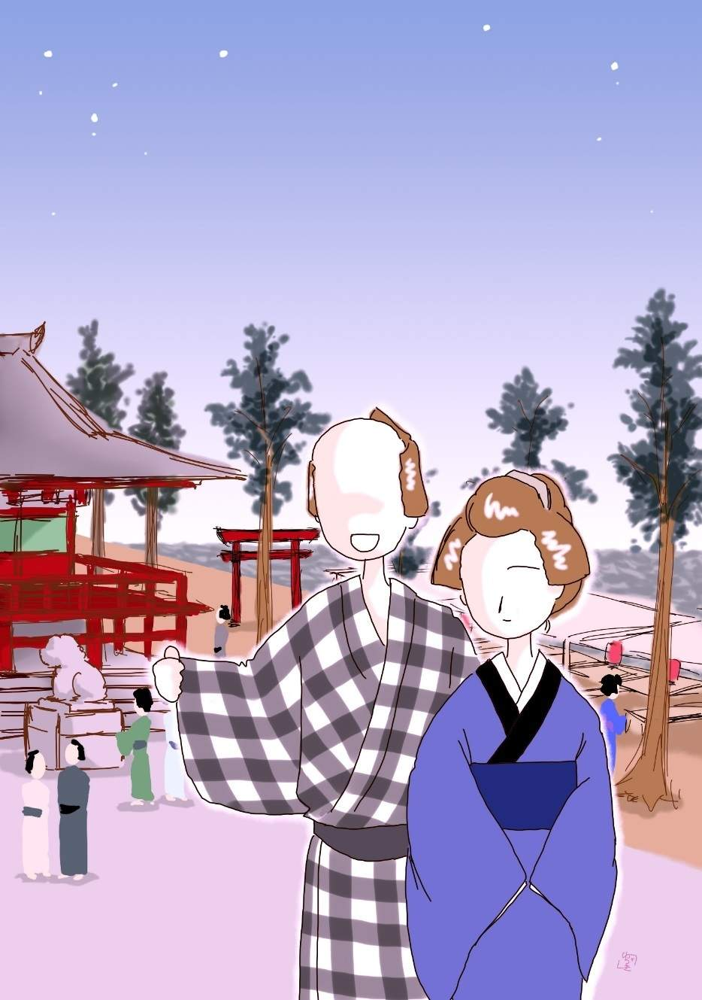

| 人形の誘惑: 銭形平次捕物全集第37話 (銭形倶楽部) | |
| 野村胡堂 | |
| ZENIGATA CLUB (2018) | |
一
新吉は眼の前が真っ暗になるような心持でした。二年越し言い交 したお駒が、お為ごかしの切れ話を持出して、泣いて頼む新吉の未練さを嘲 けるように、プイと材木置場を離れて、宵暗の中に消え込んでしまったのです。
------父親が聴いてくれないから、末遂げて添う見込みはない。出世前のお前さんに苦労をさせるより、今のうちに切れた方が宜い------というのは、十八や十九の若い娘の分別というものでしょうか。
------父親の不承知は今に始まったことではない、版 木 彫 りの下職に、何程の出世があろう------と詰め寄ると、お駒は唯もう父親の不承知一点張で、取付く島もないような冷たい顔をして、------これからは逢っても口を利いておくれでない、つまらない噂を立てられると、お互いの為にもならないから------そんな念入りな事まで言って、美しいおもかげ だけを残して、一陣の薫 風 のように立去ったのでした。
「新さん」
不意に、後ろから声を掛けた者があります。
「------」
黙って材木から顔を離して振り返ると、肩のあたりへ近々と、お駒の継 母 のお仙が、連れ子の少し足りない定吉と一緒に、心配そうに立っているのでした。濡 手拭 を持っているところを見ると、町内の銭湯へ行った帰り、夜遊びに出た愚 かな伜と一緒になったのでしょう。もう十九にもなる定吉は母親の後ろから顔を出して、大の男の泣くのを、世にも不思議そうに眺めております。
「新さん、お前さんは可哀想だね。------聴いちゃ悪いと思ったけれど、出逢頭 で、逃げることも隠れることも出来ないんだもの、皆んな聴いてしまったよ」
「------」
「あの娘 はね、あの通りの気象者だから、お前さんの気持も考えずに、ポンポン切れ話をするんだろう」
「------」
「新さん、お前さんの前だから言うんじゃないが、私は蔭ながら随分骨を折った積りさ。生 さぬ仲の遠慮はあるにしても、あんまり勝手で見ていられないから、------どんな事があっても、新さんを捨てちゃ冥利 が悪い、もう一度考え直すように------ってネ」
お仙は新吉の背 でもさすってやりたい様子でした。房五郎の後添い、お駒の為には継母に相違ありませんが、本当によく出来た人で、四十八九にしては若々しい容貌 と共に、町内でも褒めものの女房だったのです。
「------」
新吉は恐ろしい激情に打ちひしがれて、口もきけない様子でした。二十一にもなっているくせに、気の弱い生れつきで、男前でも立派でなければ、親分手合の房五郎の娘と、割 ない中になるような、たいした貫禄の人間ではなかったのです。
「新さん、短気を起しちゃいけないよ、又そのうちに良い話があるかも知れない。私じゃたいした力にもならないが、夫 の罪亡ぼしもあることだから、出来るだけの事はしてあげたい」
せめてこの母親の半分もお駒に真心があったら------と新吉は又新しい涙を誘われました。
「おっ母ア、帰ろうよ」
伜の定吉は、二人の話に退屈して、グイグイと母親の袖を引きます。
「とにかく、あまりクヨクヨしない方が宜いよ。今まで通り、時々は家へも遊びにも来るんだネ。明日の晩は節分で、夫 は参会があって浅草へ出掛けるし、私は定吉と明神様へお詣りに行くから、その間に来て、よくお駒と話してみてはどう？ お駒だって、父親の言う事や、持 参 付 の婿の事ばかり考えているわけでもあるまいから」
「えッ持参付の婿？ それは一体誰のことです」
思いも寄らぬ話に、新吉は愕然とした様子でした。お駒が急に冷淡になって、愛想づかしと言っても宜いほどツケツケ物を言った原因が、継母のお仙の口からはっきり知らされたような気がしたのでした。
「おっ母ア、帰ろうよ」
定吉はグングン母親の手を引きました。十九と言っても、智恵の足りない子は反って身体の育ちがよく、十三十五の町の少年達と遊んでおりますが、身体だけ見れば、立派な一人前の若い衆で通る恰幅だったのです。
二
「新吉、諦めた方が宜いぜ。親爺も親爺なら娘も娘だ。あんな犬畜生にも劣った雌 に、未練を残すことがあるものか」
翌る日の昼頃、新吉には義理の兄の岩松が、煮えこぼれるほど腹を立てて帰って来ました。人を害 めて島流しにされたことのある人間ですから、どうせ物優しい男ではありませんが、三十を越して、滅切 り物静かになった兄 哥 が、こんなに腹を立てたのは、一緒に住んでいる新吉もあまり見たことがありません。
「兄さん、何をそんなに------」
新吉は言いかけて口を緘 みました。お駒を犬畜生にする岩松に、反感らしいものを持たないではありませんが、そうかと言って、この気の強い義 兄 に、楯 を突くことは思いもよらなかったのです。
「お駒は角の酒屋の次男坊と一緒になるんだよ、持参付の婿だ、こちとらは傍へも寄り付けるこっちゃねえ」
「えッ、やはりあの辰之助と------」
昨夜お仙の言ったことが、犇々 と思い当ります。
「打ち殺してもやりてえが、------あの女には、お前まだ未練があるだろうねえ」
「いえ、兄さん」
「そうじゃねえ。俺の眼は見通しだ。昨夜からお前、ろくに物も食わないじゃないか」
「------」
「あの親父の房五郎は、四年前の明神様の大喧嘩の時、二三人ならず人を害 めている。女房子があるし、年も取っているから、可哀想だと思って、若い俺が一人で罪を背 負 ってやったんだ。俺があの時ベラベラ申上げてしまえば、今頃は三宅島の土になっている野郎だ」
「------」
岩松の憤激はもっともでした。明神様の境内で土地のやくざが大喧嘩を始めた時、年が若くて一本調子で、酬 いられない苦労をするのを、一番男らしい仕事と思い込んでいた岩松は、房五郎の分まで罪を背負い込んで、三宅島へ流されたのは四年前の夏、上様御不例やら、勤 向 の神妙さやらで、許されて江戸に帰ったのは、ツイ半年ばかり前のことだったのです。
「俺が島から帰って来ても、ろくに挨拶もしねえ。義理を知らねえ野郎だと思っていると、挨拶の出来ないわけ があったんだ。なア新吉、手前も薄々聞いているだろうが、あの房五郎の野郎は、俺が島から帰って来るのを煙 たがって、御赦免の噂が立つと、内々俺だけその御沙汰に漏れるように、お役人へ手を廻して頼み込んだって言うじゃないか」
「------」
新吉は返答に困りました。房五郎が恩人の岩松が島から帰るのを邪魔したという噂はありましたが、お駒の父親だけに、そんな事があろうとは、信じたくなかったのです。
「房五郎の野郎、打ち殺しても飽 き足らねえ野郎だが、唯野良犬のように殺したんじゃ胸が治まらねえ。------俺はこの間から、どうして思い知らせようか、そればかり考えているんだぜ」
「------」
義理の兄ながら、人殺しの兇状持で、世間から白い眼で見られている岩松、------性根の良いことは一緒に暮している新吉が百も承知ですが、一たん思い立つと、何をやり出すかわからない、恐ろしい激情家でもあったのです。
「そこでな新吉、俺は大変なことを思いついたんだ。お駒とお前が仲の好いうちは、俺はその気にもならなかったが、今となっちゃ止められる心配もあるめえ。------大きな声じゃ言えねえが、房五郎を苦しめるのは、自慢の娘のお駒をどうかするのが一番だ」
「兄さん」
「黙って聞け」
「兄さん、後生だから、そんな事は止して下さい、捨てられたのは私の腑 甲 斐 なさで、お駒に少しも悪いことはありません」
新吉は、兄の腕にも膝にもすがり寄って、その無法な企 てを止めたい心持で一杯でした。
「馬鹿野郎、そんな弱気だから、女の子にまで舐められるんじゃないか。俺のするのを黙って見ているが宜い。------今晩は房五郎も女房のお仙も、あの白 痴 息子の定吉も留守だってえじゃないか。こんな折が滅多にあるものか」
「兄さん、そればかりはどうか」
「ならねえよ。疑いが手前に掛りそうだと思うなら、飛離れた遠方へ行って、亥 刻 （十時）前は本郷神田界隈に寄り付かねえ工夫をしろ」
「兄さん」
新吉の言葉や思惑などは、耳にも入れてくれる岩松ではありません。まだ三十を越したばかりですが、顔立も気象も、島の三年の苦役で、すっかり荒されて来たのです。
三
その晩、房五郎の娘、本郷小町といわれたお駒は、三組町の自分の家の、長火鉢の前で殺されておりました。
房五郎は評判のよくない男ですが、お駒は本郷切っての人気娘で、近いうちに、町内の酒屋、越後屋の次男の辰之助が持参付で入婿するという評判が立っていただけに、この殺しはその晩のうちに、町内中に聞えてしまったのです。
見付けたのは継母のお仙、丁度節分の晩で、明神様へお詣りして、夜店などを一と廻り見て、何心なく帰って来ると、長火鉢に凭 れたまま、お駒はこと切れていたのです。
前髪を焦 すような恰好で坐って、四方 は血の海、後ろへ廻って見ると、鋭い切出しが、左 肩胛骨 の下へ、真っ直ぐに突っ立っていたのでした。
母のお仙と一緒に明神様から帰って来た定吉は、血を見ると有頂天になって騒ぐのを、お仙はどんなに骨を折って押え付けたことでしょう。
そのうちに騒ぎを聞付けて近所の衆が集まり、見廻り同心の出役があって、町役人立会の上、一と通り検死が済んだ頃、主人の房五郎は浅草から帰って来ました。
定吉は女房の連れ子、房五郎に取ってお駒は天にも地にも掛替えの無い一粒種で、日頃の可愛がりようも並大抵でなかっただけ、その悲歎は見る目も気の毒でした。
「畜生、------下手人はあの版木屋 の新吉の野郎に違げえねえ、------仇を取っておくんなさい」
鬼のような房五郎が、ボロボロと涙をこぼして、立会の役人の袖にすがる有様は、あまりの凄惨さに、見る者の顔を反 けさせました。
来合せた御用聞、真砂町の喜三郎は、すぐ新吉兄弟の家へ飛んで行きましたが二人共留守、半刻ばかり待って、亥 刻 半頃、フラリと帰って来た新吉を、有無を言わせず引っ括って、房五郎の家の現場へ伴 れて来ました。
「親分、どうしたと言うんで------」
「白ばっくれるな、新吉、手前のした事を見せてやるから」
現場にはまだ同心も町役人もおりました。戸口に立ち塞 がる人波を掻き分けて入ると、中の血の海も、お駒の死体もそのまま。
「あッ、到頭------」
一目見ると新吉は、真っ蒼になって、ヘタヘタと坐ってしまったのです。
「野郎ッ、何が到頭だ、------昨夜この娘に、小っぴどく振り飛ばされたって言うじゃないか。お前 がやらなくて、誰がこんなに虐 たらしい事をするものか。よくその怨めしそうな顔を見て置け」
死んだお駒の肩を取って後ろへ引くと、血の気のうせた真白な顔は、ガックと上を仰いで、丁度新吉の顔とピタリと合いました。蝋のような透き徹る娘の顔には、不思議なことに、何の怨みも驚きもなく、幸福な思い出し笑いが浮んでいそうで、反ってゾッとさせるものがありました。
「お駒」
新吉は一歩近づきました。が、次の瞬間、恐ろしい激情がこみ上げたように、火鉢越しに這い寄って、その真っ白な死に顔へ、自分の顔を寄せようとするのです。
「巫山戯 たことをしあがる。------手前なんかに馴々しい事をされちゃ、お駒が浮ばれめえ。来やがれ」
パッと縄尻を引くと、新吉は操 り人形のように、ヨロヨロと立上がって、声もなくさめざめと泣き出すのでした。
「この切出しは手前のだろう。版木屋か、彫 物 師 でもなければ使わない道具だ。柄 に籐 を巻いて、端っこに（新）という字が書いてある」
お駒の背から抜いた血染めの切出し、紛れもなくそれは、新吉の仕事場から持出したものです。
「それは------」
「知らねえとは言わさねえよ。とにかく、番所へ来やがれ。旦那衆のお調べを願ってやる」
真砂町の喜三郎は、功名に陶酔した心持で、ピシリと縄尻を鳴らしました。まだ三十台の売出し盛り、ツイ功名を急ぎ過ぎる癖はありますが、この稼業の者にしては、物のよく解った男だったのです。
四
「親分、あれを聞きなすったかい」
「何んだ、八」
「お駒が殺されたって話------」
「そうだってネ、可哀想に、房五郎は憎い男だがお駒は気の毒さ。もっとも、あんなに綺麗じゃ随分殺したい者も多勢あったろうが」
捕物の名人で、江戸開府以来と言われた御用聞、銭形平次は、子分のガラッ八こと、八五郎を迎えていつにもなくこうしんみりしました。
「それがあべこべ なんで、親分」
「何があべこべだ」
「憎いのはお駒で、可哀想なのは房五郎だ------という町内の評判ですぜ」
「ハテね」
「お駒の阿魔 は、二年越言い交した、版木屋の新吉を振り捨てて、越後屋の辰之助を、持参金三百両で婿にすることになったんで、新吉はカッとなって、仕事場から切出しを持って来て殺 っつけたんだそうですよ。親父の房五郎は大病人同様、今日は枕も上らねえ騒ぎだ」
「下手人 は新吉と決ったのか」
平次は静かに問いかけました。
「最初は知らぬ存ぜぬで頑張ったそうですよ。昨夜は宵の口から亥 刻 前まで、本所の友達のところで、花合せをやって遊んでいたと言うんで、真砂町の喜三郎兄哥も持て余していました」
「フーム」
「その本所の友達のところを当って見ると、成程それに違いない。証人が七人、少し多過ぎる位だ。その上、新吉は日頃にない大はしゃぎで、自腹を切って一升買って、皆んなに振舞って大騒ぎをやったんですぜ」
「------」
「帰ったのは亥刻 少し前、------どんな手品を使ったって、お駒を殺せるわけはねえ。継母のお仙は、戌刻 （八時）に出かけて、亥刻（十時）に帰った時は、お駒は間違いもなく死んでいたんだ」
「俺が叱られているようだぜ、八」
ガラッ八の気組の面白さに、平次もツイ笑いました。
「それでも新吉が下手人だと言うなら、憚 りながら真砂町の兄哥もヤキが廻ったネ」
「つまらねえ事を言うな」
「今売出しの真砂町が聞いて呆れらア、暮の商売じゃあるめえし」
八五郎が好い心持に啖呵 を切っている時でした。
「今日は、------銭形の兄哥はいなさるかい、あっし は」
噂をすれば影で、戸口へ来たのは真砂町の売出し、喜三郎が立っていたのでした。
「あッ、しまった」
八五郎は尻尾を巻いて逃げ出そうとしましたが、その時早く、お静に案内された喜三郎は、ニヤリニヤリと笑いながら入って来たのです。
狭い住居、もとより先刻の威勢の良い啖呵が、門口に立っていた喜三郎に聞えなかった筈はありません。
五
「今までの経緯は、八五郎兄哥 から聞きなすったろう。証拠が山ほどあるし、お駒を殺す程怨んでるのは、新吉の外にはない筈だが、困ったことに、お駒の殺された時刻は、酒と花合せに夢中で、新吉は小用にも立たないと解っているんだ」
「------」
深々と腕を組んだ平次を前に、喜三郎はこう語り進みました。
「それだけなら、外の下手人を捜せば宜いわけだが、もう一つ困ったことがあるんだ」
「------」
「新吉が殺す筈はないと解って、帰そうとすると、------実はお駒を殺したのはこの私で------と新吉本人が言い出したんだ」
「へエ------、それは面白いな」
銭形平次の頬は漸く綻 びました。
「俺にはどうも面白いとは思えねえ。最初殺した覚えはないと言ったが、本所の友達の家から一と足も出ないと解ると、殺したのは俺だと言い出しあがる。------外にお駒を殺す者はなし、こんな弱ったことがない。どう考えても解らないから、兄 哥 へ知恵を借りに来たんだが、------どうしたものだろう」
喜三郎は若くて淡白でした。近頃江戸中を圧する平次の名声を妬 む色もなく、同じ御用を承わる身の恥を忍んで、こう知恵を借りに来たのです。
年の頃も平次と同年輩、平次の抜群の男前に比べると、少し頑固で無器用ですが、江戸ッ子肌らしい、物にこだわらぬ気象が人に親しませます。
「兄哥 、有難てえ、こっちからお礼を言うよ。------実は俺にも少し考えがあったんだが、縄張がうるさいから、黙っていたんだ。------兄哥でもなきゃア、こんな事を淡泊 相談に来ちゃくれまい」
平次は両掌を揉み合せて喜んでおります。
「そう言われると俺も器量がよくなるが、実はここの入口に立った時は、穴へでも入りたかったよ」
「八の野郎が飛んでもない事を言やがるからだ。------気を悪くしないでくれ、後でうんと油を取って置くから」
平次の話を聴くと、ガラッ八は向うの方でピョイピョイとお辞儀をしております。膝小僧がハミ出した狭い袷、髷の刷 毛 先の、神田っ子らしく、左へ曲っているのも間が抜けます。
「八兄哥に悪いことは少しもない。------ところで兄哥、町内の若いのを、虱潰 しにしらべたが、お駒と引っかかりのあるのは、新吉の外には一人もねえ。泥棒にしてはなくなった物がないし、------」
喜三郎はもう用談の方へ入っておりました。
「お駒は入口へ背を向けていたろうか」
と平次。
「いや、入口の方へ顔を向けて、刺された背中はお勝手を向いていた」
「お勝手の戸は？」
「内から締めて、輪鍵 が掛っていた筈だ」
「お駒に気が付かないように、下手人は後ろへ廻れないわけだね」
「その通りだ。------下手人はお駒のよく知ってる者とまでは俺も見込みを付けた」
喜三郎もこの時ばかりは得意そうでした。
「お駒が長火鉢の前へ来て坐る前に入り込んで、押入れかどこかへ隠れていたとしたら？」
「さア、そこまでは------」
平次の疑いはもっともでした。これは決して考えられないことではありません。
「お駒の死体を見た時、新吉は何んて言ったろう」
と平次。
「それはよく判っている筈だ。死体を見ると新吉はいきなり。あッ到頭------と言ったように思う」
「それで沢山だ。新吉は下手人じゃない、が、誰かを庇 っている。とにかく、行ってみるとしようか」
こうして平次はいよいよこの事件に乗出す気になったのです。
六
その日の夕刻、新吉の義兄の岩松は番所に呼出されました。
事件が重大と見たのか、与力笹野新三郎出役、真砂町 の喜三郎と銭形平次が腰縄を打たれた新吉を調べております。
「岩松、隠しちゃ為にならねえよ。弟分だと思って、庇い立てをすると、反って不都合なことになるよ」
釘を一本刺した上、いろいろ新吉とお駒の関係を問い訊しました。
「新吉はそんなだいそれた事の出来る人間じゃ御座いません」
岩松は一生懸命弟の為に弁解しましたが、結局、弟の上にかかる疑いは、容易に霽 れるものでない事を呑込まされただけの事でした。
「岩松、気の毒だが、新吉は免 れようはねえ。自分でお駒を殺しましたと、白状しているんだ」
「そんな事が、親分」
岩松は百方弁解しましたが、本所に亥刻 近くまでいたという、新吉の不 在 証 明 を知らなかったので、この上は救う道も尽きてしまったと思ったのでしょう。
「帰れ。もう宜い」
喜三郎に冷たく言われると、思い定めた様子で、最後の切札を投げてしまいました。
「親分、聴いておくんなさい。------出来ることなら隠しおわせようと思いましたが、弟の新吉が処 刑 になるのを見ちゃいられません。何を隠しましょう、お駒を殺したのは、この私で------」
「何だと？」
「何べんでも申します。お駒を殺したのは、この岩松に相違御座いません、------お駒の父の房五郎は、私に罪を背負わせて四年前島へ送らせた上、御赦 免 になって江戸へ帰るのを邪魔し、一人で好い児になろうとした程の悪党で御座います。打ち殺すのはわけもないが、一と思いに殺しちゃ、苦しめようが足りないから、眼の玉のように大事にしている、房五郎の娘を殺してやりました。------弟の仕事場から、切出しを持って行ったのが大 縮 尻 で、何にも知らない弟に罪を被 せちゃ、見ているわけに参りません。弟がお駒殺しを白状したなら、それはこの兄を庇う為で、------気の弱いあの野郎にしちゃ、一代の大出来で御座います」
岩松の白状は予想外でした。いや、予想外であるべき筈ですが、平次も、喜三郎も、笹野新三郎も少しも驚く色のなかったのは何としたことでしょう。
「嘘を吐けッ」
「へッ」
平次の声は辛辣に岩松の口を緘 しました。
「お前はどうせ島帰りだから、世間の人に白い眼で見られるよりはと、弟の罪を背負って行く積りだろう」
「飛んでもない、親分」
「それじゃ聞くが、切出しは弟の仕事場から持出して、どんな具合にして持って行ったんだ」
と平次。
「手拭に包んで、懐中へ入れて行きました」
岩松はスラスラと言って退 けます。
「その手拭の模様は？」
「白と浅黄 の染分けで、真ん中に橘 の模様があります」
「フーム」
平次は思わず唸りました。
「それに違いないでしょう、親分」
岩松は番所の隅に小さくなっている弟の新吉を顧みながら、何となく重荷でもおろしたような顔をしております。
「その手拭はどこへやった」
平次は追及の手をゆるめません。
「血がついたので、どこかへ捨ててしまいました」
「ところで、もう一つ訊くが、お前が入った時、お駒はどこにどうしていたんだ」
「長火鉢に凭 れておりました」
「声を掛けたか」
「いえ、そんな事をしちゃ声を出されて失策 ります。格子戸から飛込むと、障子を開けて、いきなり長火鉢に凭れているのを、後ろから突いてしまいました」
「格子を開けた時気が付かない様子だったのか」
「定ちゃんかい------と言いました」
岩松の話は、疑う余地のないほど判然しておりますが、平次は喜三郎と笹野新三郎を顧みて、何やらうなずき合いました。
「岩松、お前は飛んでもねえ野郎だ」
「へエ、------相済みません」
「お駒は入口の方へ向いていたぞ。声を掛けずに後ろから刺せるわけはない」
「へッ」
「お前 のように物騒な人間が入って行けば、第一若い娘は声を立てる。近所はあの通り近いが、誰もお駒の声を聴いた者もない」
「------」
平次の話は予想外なことばかりでした。
「それから、お前の手拭------橘の模様のある染分けの手拭は、血も何にもつかずに、お駒の殺された隣りの部屋の押入に投り込んであったよ。これはどういうわけだ」
「------」
「新吉を庇い立てするのも宜いが、ウソはもう少し器用に吐くものだ」
平次の明察には、一言の抗 いようもありません。
「恐れ入りました、------」
岩松は強か者らしい頭を 垂れて、暫らく唇を噛みます。
「それ見ろ。------ところで、本当の事を聴かして貰おうじゃないか。岩松、お前はお駒を殺す気で、弟の細工部屋から切出しを持出し、橘の模様の手拭に包んで、お駒の家の前まで行った事は本当だろう。それからどうした」
あまりによく知り過ぎている平次の言葉に、岩松はあっ気に取られてその顔を眺めておりましたが、思い直した様子で、こう続け出しました。
「恐れ入りました。それに相違御座いません。房五郎への怨み、弟の歎き、お駒を殺して胸を晴そうと、あの格子まで開けましたが、障子一重と言うところでお駒に声を掛けられ、急に気が変ったので御座います。------一生島で朽 ち果てる積りなのが、たった三年で江戸へ帰ったのも何かの運、このまま安穏に暮せるものを、つまらない怨みや意気張りで、若い女一人を殺せば、今度は私も命がありません。恥かしい事ですが、急に命が惜しくなって、後をも見ずに逃げ帰り、友達の家で夜更けまで飲んだようなわけで御座います。翌る日、弟が縛られたと聞いて、私の腑 甲 斐 ないのに腹を立てて、新吉がやったのかしらと、一応は思いましたが、この男は生れ付きの善人で、気の弱い事この上なしですから、人を殺せる筈はありません。これには何か、深い仔細が御座いましょう。親分、旦那、どうぞ、もう一度調べ直して弟を許してやって下さいまし」
岩松の言葉には、もう掛引きも偽もあろうとは思われません。それを聞いて一番驚いたのは、隅の方に蹲 まっていた、縄付の新吉でした。
「兄さん、有難い。------兄さんのした事とばかり思い込んで、身に覚えのない罪を引受けたが、兄さんが潔白と判れば、もう心配することはない。親分、私は何にも存じません。あの晩兄の見幕が恐ろしかったので、私は臆病のようだが、兄に言われた通り、本所へ逃げて行って、亥 刻 までは家へ帰るまいと思ったので御座います」
気の弱い新吉は、自分の臆病さを責めながらも、不 在 証 明 を拵えずにはいられなかったのでしょう。
後で兄に疑いが掛りそうなのを見て、急にお駒殺しが自分の仕業だと言い張ったのは、兄に対する自分の腑甲斐なさの申訳けでもあったのです。
「------」
平次も喜三郎も、笹野新三郎も、何にも言いませんでした。この様子では、新吉はまだ許されるか許されないか、見当も付かなかったのです。
七
疑いは当然継母のお仙の方に向いました。
恐ろしく丁寧な家探しを繰り返しましたが、しかし、何にも新しい証拠は出てきたわけではありません。
お仙は思いの外心持の良い女だという証拠と、お仙の連れ子の定吉が、白 痴 のくせに妹分のお駒に懸想して、蚯蚓 ののたくったような手紙を書いて、人の悪いお駒に翻 弄 されていたことが判った位のものでした。
「お神さん、明神様へは、定吉と一緒に行ったんだね」
「ハイ」
番所に呼出されたお仙は、何の思い煩 う様子もなく神妙に答えます。
「時刻は？」
これは喜三郎でした。
「家を出たのは戌刻 （八時）頃、近いところですからブラブラ行って、亥 刻 （十時）ぎりぎりに帰って参りました」
「定吉と離れたことはなかったのか」
と喜三郎。
「明神様へお詣 をしてから、定吉は境内にある見世物が見たいと申しましたが、私は頭痛持ちで、あんなものを見ると、眠られなくて困りますので定吉だけを入れて、私は一人外に待っておりました」

「時刻にして、どれほどだ」
「半刻ともかかりません」
「見世物は何んだい」
「竹田人形で御座います、暮からズーッと掛かっております」
「フーム」
喜三郎は唸りました。定吉と半刻でも離れていたとすれば、その間に三組町まで飛んで来て、お駒を殺して、又元の場所へ帰られないものでもない------と思ったのでしょう。
平次はお仙の顔と、喜三郎の顔を等分に見比べておりましたが、
「真砂町の、済まないが、俺にちょいと任せては貰えないか、少し訊いて置きたいことがあるが」
変なことを言い出します。
「宜いとも」
喜三郎は素直に身を引きました。お仙に関 る疑いが濃厚になると、平次に任せて、もう少し証拠固めをして置こうと思ったのでしょう。
「お神さん、------つかぬ事を訊くようだが、平常お前さんとお駒との間は、どうだったろう？」
「ハイ」
「正直に言って貰いたいが------」
「表向きは何にも御座いませんでしたが、やはり生さぬ仲で、お互いに辛いことも、泣くことも御座いました」
お仙の言葉は思いの外でした。
「喧嘩をするような事もあったろうな」
「お恥かしいことで御座います」
「お駒が死ねば、房五郎の跡取りは定吉ということになるだろうな」
平次の問はいよいよ突っ込んだものでした。
「そんな事になりましょうか」
「房五郎の身上はどんなものだろう」
「あの通りの渡世 で、何程のものも御座いません」
「房五郎はお駒を大層可愛がっていたそうだが、お神さんは良い心持ではなかったろうな」
「何とか良い心持になろうと骨を折りました、皆んな私が至らぬからで」
お仙は涙ぐんでいる様子です。
「定吉とお駒と一緒にするような話はなかったろうな」
と平次。
「一つ違いで、兄妹と言っても、赤の他人ですから、本人同士がその気なら、一緒にして一生側で暮したいと思いましたが、こればかりは親の儘 にもなりません、定吉はあの通りで------」
「定吉はお駒のことをどう思っているだろう」
「それはもう、お駒は綺麗ですし、定吉も年頃の事で------」
ここまで行くとお仙ははっと言葉を切りました、うっかり伜の定吉------あの白痴の定吉に、あらぬ疑いがいってはならぬと思ったのでしょう。
「それで？」
平次は素知らぬ顔で次を促 しました。
「親分さん、定吉は私と一緒に出かけて、私と一緒に帰っております。ほんの四半刻ばかり、見世物の中へ入ったきり」
「解った解った、心配することはないよ、お神さん」
平次はそう言ってこの調べを打切りました。
八
「銭形の兄哥、あのお神さんを縛ったものだろうか」
自分の家の方へ帰って行くお仙の後ろ姿を見送って真砂町 の喜三郎は言いました。
「いや、あのお神さんはこの上もない善人だ、決して人を殺す女じゃない」
平次は何やら考えております。
「だが、お神さんより外に、お駒を殺す者はないことになるぜ」
喜三郎はなかなか諦めません。
「襦袢 二枚と、薄綿入を着ている人間を、後ろからたった一と突きで殺せる女があるだろうか」
と平次。
「フーム」
「お駒は声を立てず、苦しみもせずに死んでいる。あれだけの業 をするのは、男でも余程力のある者だ。お仙のような華 奢 な人間では、綿入を通すだけでもむつかしい」
「------が、下手人はどうしてもあの家の者か、あの家へ自分の家のように出入りする者だ」
喜三郎も屈してはいません。
「房五郎か、でなければ定吉か------と言うことになる」
「房五郎は浅草にいた、------これは新吉よりももっと多数の人が証人になっている」
「定吉は竹田人形の小屋の中にいた、------お仙は嘘を吐く筈はない」
これで事件はハタと壁に突き当ってしまいました。
「とにかく、明神様まで行って見るとしよう」
平次と喜三郎とガラッ八は立上がりました。事件が容易に目鼻がつきそうもないので、与力笹野新三郎は、とうに八丁堀へ引揚げてしまったのです。
「ここから明神様の境内まで、女の足で、四半刻足らずで行って来られるかどうか、一つ試して見るんだね」
八五郎は寒空に毛脛 を出し駆け出しそうにしております。
「お仙が駆けたというのかい、------毛脛を出して」
と平次。
「へッ、正に一言もねえ」
無駄を言いながら明神様の境内 に着いた時は、もう陽が落ちかけておりました。
裏へ廻って、その頃評判を取った竹田人形の木戸を入ると、寒い時分で、さすがに見物がチラリホラリといるだけ、人形の生けるが如き姿態が、夕 陽 を受けて、無気味な艶めかしさで人に迫るのでした。
小屋を一と廻り。
「節分の晩はどうだったえ」
平次は小屋の者らしいのを捉まえて訊くと、
「あの晩は峠でしたよ、よく入ったもので」
そんな事を言ってたいして忙しそうもなく、裏の方へ消えてしまいました。
竹田人形は小栗判官照手 姫 十二段返し、わけても照手姫の松葉燻 しが良い出来で、梁 に吊られた照手姫の、苦痛に歪む姿態の悩ましさ、白い脛と赤い裳 に、メラメラと絡みそうになる仕掛の焔の凄まじさ、乱れ乱れた髪、蒼白い------が妙に人を牽 付 ける顔、乳の上で縛った荒縄など、極めて変態的ながら、たとえようもない艶美なものだったのです。
「成程、これは良い出来だ」
そんな事を言いながら、小屋の後ろの方、見物人の為に作った、葭 簾 張りの便所の側まで行くと、平次は黙って突立ったまま、暫くは動こうともしません。
「あれを押してくれ、八」
「へエ」
ガラッ八は少し這い加減に葭簾 の下の方を押すと、そこだけは、杭 と縁が切れて、手に従って、かなり大きい穴が開いて行くのです。
「ここから人間が潜って出て、そっと入られない事はあるまい」
平次の静かな言葉は何もかも解決してしまいました。
「やはり、あの白痴 か」
と喜三郎。恐ろしい失望とも屈辱ともつかぬ感情が、三人の顔を硬 張 らせます。白痴にうまうまと担がれた馬鹿馬鹿しさを、つくづく感じ入ったのでしょう。
「さア、引返そう」
「無駄だ」
平次は黙って夕 靄 の中を眺めております。
「どうした、銭形の」
「先刻は気がつかなかったが、定吉はもう生きてはいまい」
「えッ」
「とにかく、行って見よう」
平次とガラッ八と喜三郎は、今度は何の遠慮もなく、夕方の街を駆け出しました。
三組町に着いて、房五郎の家へ飛込んだ時は、平次が予言したように何もかも終っておりました。
房五郎が二階で寝ているうちに、女房のお仙は連れ子の定吉を殺して、自分も死んでいたのです。
定吉はこの世で一番信頼する母親の手で、死ぬまで何にも知らずにいたことでしょう。二挺 剃刀 で後から咽 を切られ、血潮の海の中に突っ伏し、お仙はその上に崩折れて、これも見事に生害していたのでした。
房五郎の驚き------いや、そんな事は書くまでもありません。
× ×
「八、相変らず絵解きを聴かして貰いたいと言うのだろう」
帰って来ると、熱いのを一本つけさして、平次はこんな事を言いました。
「へエ、先刻からウズウズしているんで」
八五郎は前へ乗り出して膝小僧を隠します。
「何でもないよ。新吉、岩松の兄弟は飛んだ仕出しさ。だが、あの二人は何んとなく好きなところのある人間だよ、------それよりも惜しいのはお仙さ」
「お駒は」
「お駒は房五郎の娘だ、恐ろしく悪い女だ。あれほどの容貌で、白痴の定吉を玩具にしていたんだ。火遊びの遊びが過ぎて殺されたのさ」
「------」
「お袋を待たして見世物へ入った定吉は、あの照手姫を見るとムラムラとお駒を思い出したのさ。便所の側から飛出して帰ると、岩松が帰ったばかりで戸口には手拭に包んだ切 出 しが落ちている。それを拾って入って、一たん押入へ投り込んだが、お駒にからかわれて、急に殺す気になったんだよ。根が白痴だからたまらない、ゲラゲラ笑っているお駒の背後から双 手 突きにズブリとやり、そのまま見世物へ帰って、先刻の穴からもぐり込み、表から出て母親と一緒に帰ったんだ。お駒の死体を見て急にはしゃいだのはその為だよ。萎 れて見せるほどの知恵はないんだね」
「親分、見ていたようだね」
「それより外に考えようがないよ。あれは白痴 だが、白痴のくせに、恐ろしく悪賢こいところがある」
「お仙が定吉を殺したのは？」
「新吉でなく岩松でなく、自分でないとするとお駒を殺すのは定吉より外にない、見世物小屋の外で待っていて、あんまり長かったことや、定吉の様子が変だったことを思い合せて早くも感づいたのさ。番所から帰した時の顔色はなかったよ、あの時気がつくとよかったが------」
「------」
平次の顔にはありありと悔恨の色が動きます。
「帰って定吉に訊くと、定吉は母の前だから、ペラペラ喋 ってしまったのさ。定吉の性質や、お駒との関係も知っているので、お仙は何もかも読み尽して、白 痴 な子を処 刑 にされるよりはと、女心の浅墓な親子心中をしたのだろう。白痴と判ればお上にも御慈悲があったろうに、------お仙は可哀想なことをしたよ」
平次は暗然としました。この事件は後々までも平次の心持を暗くした様子ですが、その代り新吉、岩松という二人の友達が出来たのを、どんなに喜んだかわかりません。
（編注）
作品中には、身体の障害や人権にかかわる、差別的な語句や表現が見られますが、本書が成立した当時の時代背景等が現代とは異なる古典的な文学作品でもあり、著者が故人でもありますので、底本のままとしました。ご理解、ご諒承のほどをお願い申し上げます。
著者---野村胡堂
挿絵---萩 柚月 © 2017
初出---「オール讀物」昭和十年二月号 文藝春秋社
底本---「錢形平次捕物全集」第二巻 河出書房 昭和三十一年五月三十一日初版
編集・発行 銭形倶楽部